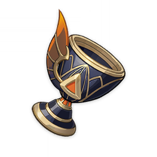
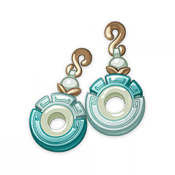

| № | Название | Изображение | Описание | Ссылка | Источники |
|---|---|---|---|---|---|
| 1 | Нефритовый листок |  |
Нефритовая подвеска в форме листка. В прошлом она имела особое значение для двоих друзей. Давным-давно здесь не было парома через реку, только облачный склон горы. Не успела хозяйка горы решить, что на ней посадить, как её уже опередили. «Когда это дерево немного подрастёт, я сорву его листья и заварю вам чай. Затем я приглашу Хранителя Облаков и Творца Гор...» «Ты посадил дерево на моей земле, и у тебя хватает наглости говорить такое!» Хотя молодая хозяйка горы злилась, она уже представляла себе аромат чая. | Отголоски подношения | https://genshin-impact.fandom.com/ru/wiki/Отголоски_подношения |
| 2 | Пора расцвета |  |
Маленькое золотое украшение в форме цветка с шестью лепестками, который никогда не увянет. Символизирует быстротечность земной славы. В его сне призрак танцевал под музыку при свете луны. Он напоминал самого юношу в далёком прошлом, когда он был чист, словно лист бумаги. А может быть, его же, но изжившего ненависть и горести и обнажившего после этого свою чистую и хрупкую сущность. Странник не знал, что способен видеть сны. Он решил, что это может быть очередным трюком учёных или ничтожным сопротивлением прежнего сердца. | Кокон сладких грёз | https://genshin-impact.fandom.com/ru/wiki/Кокон_сладких_грёз |
| 3 | Корона Ватацуми |  |
"Люди моря поют, что никакая грязь не может коснуться этого венца из жемчуга и кораллов, что сам Омиками благословляет его владельца на правление. Такой благосклонности были удостоены храбрый повелитель Тодзанно и сёстры-близнецы, вольно бороздившие волны. Все они увековечены в песнях островитян. Говорят, что прирождённые правители когда-то служили помощниками божества. Под их руководством морской народ стал заниматься сельским хозяйством, рыбной ловлей и охотой. Однако бог пал в битве, в которой ему было предначертано судьбой принести себя в жертву." | Моллюск морских красок | https://genshin-impact.fandom.com/ru/wiki/Моллюск_морских_красок |
| 4 | Последний медовый пир |  | Винный кубок, украшавший собою грандиозные пиршества давно ушедших времён, растерял весь свой былой лоск. «Бесконечная радость впоследствии заканчивается горечью, а сладкие воспоминания растворятся в клубах дыма». Вначале пир принадлежал королеве цветов и лунных ночей, власть — королю пустыни, а жизнь — хранителю растений. Подобные серебряной луне, золотому солнцу и изумрудному оазису, три божественных правителя решили заключить союз. | Позолоченные сны | https://genshin-impact.fandom.com/ru/wiki/Позолоченные_сны |
| 5 | Магический сосуд хранителя тайн |  |
"Люди моря поют, что никакая грязь не может коснуться этого венца из жемчуга и кораллови что сам Омиками благословляет его владельца на правление. Такой благосклонности были удостоены храбрый повелитель Тодзанно и сёстры-близнецы, вольно бороздившие волны. Все они увековечены в песнях островитян. Говорят, что прирождённые правители когда-то служили помощниками божества. Под их руководством морской народ стал заниматься сельским хозяйством, рыбной ловлей и охотой. Однако бог пал в битве, в которой ему было предначертано судьбой принести себя в жертву." | Цветок потерянного рая | https://genshin-impact.fandom.com/ru/wiki/Цветок_потерянного_рая |
| 6 | Тыква пробуждения |  |
Тыква, украшенная золотой и чёрной краской. Её первоначальный цвет уже неразличим. Похоже, она используется в основном как реквизит для выступлений. Амэнома, Фуцу, Иссин, Хякумэ, Сэндзю - все вместе когда-то они составляли пять великих школ «Райдэн гокадэн». Но лишь Амэнома по сию пору сохраняет линию преемственности, в то время как последователей Иссин едва ли сыщешь в целом свете. Люди думают, что всё дело лишь в разрушительном ходе времени. Никто и не подозревает, что у упадка могут быть тайные причины. | Кокон сладких грёз | https://genshin-impact.fandom.com/ru/wiki/Кокон_сладких_грёз |
| 7 | Серьги текучести |  | В долине Чэньюй много гор, ручьёв и историй. Вот одна из самых известных: Давным-давно существовал бесценный камень, который был брошен в воды глубокой реки, чтобы он не достался демону... Из этой реки родилось множество притоков. Об одном из них, кстати, тоже есть история. Прекрасный нефрит когда-то был необработанным нефритом со священной горы, из которого Властелин Камня собственноручно создал шедевр. Брошенный в воду камень мог быть скипетром, кулоном или даже чашей. | Отголоски подношения | https://genshin-impact.fandom.com/ru/wiki/Отголоски_подношения |
| 8 | Перо суждения |  |
Когда-то с помощью этого особенного пера взвешивали сердца преступников, но оно утратило своё предназначение. «В новом мире повсюду царит добро». В древности смокли небесные указы, и земля лишилась своего хозяина. Прошлые культура и гармония были забыты, и всё погрузилось в непроглядную тьму. Позже закон, который даже время не в силах отменить, вновь стал отмерять жизнь всего сущего в пустыне. | Позолоченные сны | https://genshin-impact.fandom.com/ru/wiki/Позолоченные_сны |
Артефакты — это экипируемое снаряжение, повышающее характеристики персонажей. Существует пять слотов артефактов разного типа:
- Цветок жизни
- Перо смерти
- Пески времени
- Кубок пространства
- Корона разума
Экипировка определенного количества артефактов из одного набора активирует бонусы комплекта артефактов.